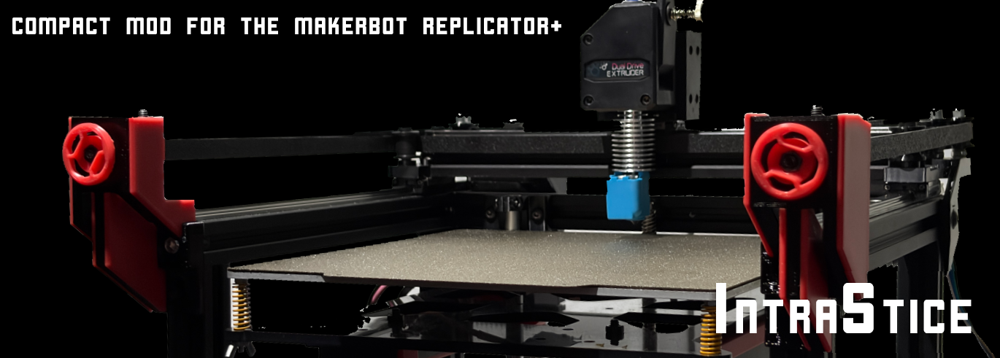

EXTREMELY COMPACT 220MM HBOT 3D PRINTER
Project Overview
This project aims to 'upgrade' a stock MakerBot replicator plus, or also referred to as 5th gen, into a significantly more reliable and faster 3D printer at a low cost, using as many original parts as possible.
Design Priorities
One of the most spatially efficient 220mm³ capacities in its class.
Powering the Mellow Micro4 and Fly-ADXL345 for rapid Klipper processing.
Achieved via E3D V6 + Titan Extruder pairing.
Advanced Feature Set
System Architecture
01. Physical Design
A very modular approach was taken compared to the predecessor Chimera design. Electronics are split into dedicated 'bays' and completely housed in the bottom section under the frame.
View Top Schematic
02. Kinematics (HBot)
An HBot dropped motor gantry was used to remain as original to the Replicator architecture as possible, significantly reducing the belt length requirements inherent to CoreXY systems. Racking is mitigated by heavy-duty MGN9H rails and blocks supporting a <1kg gantry.
The Z-axis uses a cantilever design identical to the Replicator, effortlessly supporting the 220x220mm bed.

03. Power & Firmware
The system completely replaces the Replicator's 12V architecture with a robust 24V system. It incorporates an LM2596 (12V) and GYVRM (5V) power bus, protected by a dedicated crowbar circuit to shield the SBC and MCUs.
FIRMWARE: Strictly Klipper via Mainsail. Marlin is unsupported due to the advanced macros required to keep the system compact and universally sliced.
Updating Soon
Edge AI Vision System
Intrastice integrates a fully custom closed-loop state machine powered by an ESP32-CAM. This provides local inference for real-time nozzle clumping detection and anomaly resolution without cloud dependencies.